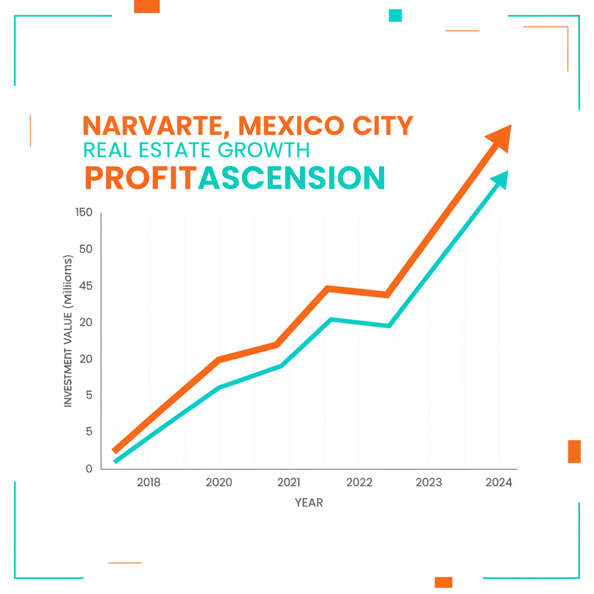

Architectural Guide 2026
Narvarte: The Mid-Century Modern Opportunity in CDMX
As central CDMX cores reach saturation, Narvarte emerges as the strategic focus for discerning international capital. We navigate its complex architectural legacy and 2026 market dynamics, transforming its mid-century soul into high-yield, structurally resilient assets, anchored in technical precision.

The Resident Architect's View
From my studio in Condesa, I often find myself drawn east to Narvarte. It’s a different cadence, a grounded elegance where the aroma of a truly exceptional taco al pastor from a corner stand mingles with the precise geometry of a 1950s façade catching the afternoon light. It's not the grand bohemian stage of Roma; it's the sophisticated, quietly confident architectonics of a neighborhood that truly works, a place where a double-glazed window isn't a luxury, but a necessity against the rhythmic calls of the gasero and the unique acoustic canyons amplifying city sounds.

Erik Martínez, AIA
Principal Architect. Former SHoP Architects NYC. Bringing international precision to CDMX's most complex heritage assets.
Iconic Landmarks
- Glorieta SCOP (Murals/Mosaics)
- Parroquia de la Resurrección
- Estadio Azul (now Plaza de Toros México)
Narvarte: A Strategic Evolution in Mexico City Real Estate
The Mexico City real estate market in 2026 operates at a 'two-speed' velocity, where the hyper-saturation of prime central neighborhoods has redirected international capital and ultra-high-net-worth individuals towards adjacent zones of high potential. Narvarte—comprising Narvarte Poniente, Narvarte Oriente, Vértiz Narvarte, and Piedad Narvarte—stands as a primary target. It offers a unique balance of projected capital appreciation (6-10% for Lifestyle properties), robust lifestyle amenities, and unparalleled structural connectivity. This strategic shift leverages Narvarte's distinct mid-century architectural identity, dating primarily from the 1940s to 1960s, a legacy that continues to define its urban fabric and appeal in 2026.
Architectural Ethos: Functionalist Heritage Meets 2026 Demands
Narvarte's architectural identity is rooted in its functionalist aesthetic, a hallmark of mid-20th century Mexican modernism. Building here means respecting these ‘good bones’ while executing a surgical integration of 2026-level infrastructure. For the discerning expat and digital nomad demographic, this translates to properties featuring modern finishes, reliable fiber optic internet (Totalplay boasting 53.9Mbps average download speeds), and proximity to a burgeoning cluster of specialty coffee shops and coworking spaces. Renovation in Narvarte is about enhancing this intrinsic character, not erasing it, ensuring every asset delivers both aesthetic integrity and uncompromising performance.
Geotechnical Realities: Building on CDMX's Lakebed Foundation
Narvarte is squarely situated within Zone III (Soft Soil / Lakebed), representing the most geotechnically challenging environment in Mexico City. This subsoil, characterized by thick layers of highly compressible lacustrine clay, acts as a significant amplifier during seismic events, escalating both the duration and intensity of ground shaking compared to the firm ground of Zone I. The catastrophic impacts of the 1985 and 2017 earthquakes underscore the critical need for advanced structural engineering in this zone.
To meet stringent 2026 building codes, structures in Narvarte mandate deep foundations—typically friction or end-bearing piles—extending 30 to 50 meters to reach the 'Capa Dura' (hard layer). This adds a premium of approximately 15% to 20% to the structural budget. We ensure structural integrity by adhering to the most rigorous international engineering standards (equivalent to US NCARB/AIA), integrating advanced seismic damping technologies, and meticulously overseeing the piling phase. Our proactive approach mitigates the risk of differential settlement, a common issue over a 10-year horizon for improperly founded buildings, providing unparalleled structural resilience and protecting your investment.
Navigating INBAL: Preserving Narvarte's Mid-Century Artistry
Narvarte's unique aesthetic contribution to Mexico City is primarily safeguarded by INBAL (Instituto Nacional de Bellas Artes y Literatura), the authority responsible for artistic monuments from the 20th century, distinct from INAH's focus on colonial-era historical structures. This protection encompasses specific blocks and properties that exemplify the neighborhood’s mid-century modern functionalist design.
Any modification to a cataloged façade requires a 'Dictamen Técnico' from INBAL. Aesthetic constraints are precise: approved color palettes often revert to original mid-century tones—earthy pastels, off-whites, and the iconic 'Pani' blues. Original window frame materials (typically steel or wood) must be preserved or replicated to maintain the authentic profile. Notably, in the area surrounding the Glorieta SCOP, the preservation of murals and stone mosaics is a non-negotiable requirement for any adjacent development. Our due diligence always includes a comprehensive search in the Directorio de Inmuebles del INBAL, preemptively avoiding project freezes and costly Clausura notices.
Water Autonomy: Securing Your Investment Against Scarcity
Narvarte's water security, like much of Mexico City, is intrinsically linked to the Sistema Cutzamala. While historic rainfall and a 680-million-peso infrastructure upgrade saw the system reach an impressive 97.4% capacity in early 2026, localized supply interruptions remain a tangible risk due to the neighborhood's aging secondary piping network. Narvarte is categorized as a 'moderately stressed' zone, prone to pressure drops rather than complete 'Day Zero' scenarios.
Architectural Feasibility: Narvarte 2026
| Project Type | Avg. Permit Time | Seismic Risk Level | Conservation Status |
|---|---|---|---|
| Lifestyle Renovation (2-3 BR) | 2-3 Months (Renovation) + 45-90 Days (Market) | Moderate (Gringo Tax, Labor Volatility) | High Yield (6-10% Appreciation) |
| New Build High-Density (H/3/20) | 18-24+ Months (Permits & Build) | High (Zone III, Permits, Article 307 Contributions) | Strong Growth (7-8.5% Appreciation) |
| Luxury Penthouse (Narvarte Poniente) | 4-6+ Months (Market) | Moderate (Lower Appreciation vs. Lifestyle) | Niche Investment (3-5% Appreciation) |
Specialized Renovations for the Modern Urbanite
Restoring a Narvarte mid-century unit is an exercise in Invisible Modernization. We preserve the original charm—the elegant lines, the intelligent layouts—while completely overhauling critical infrastructure. This includes robust fiber optic readiness, advanced Power Conditioning systems to protect sensitive electronics, and superior acoustic mitigation. We integrate double-glazed (climalit) units with a 12mm air or argon gap to achieve 30-40 decibels of noise reduction and utilize Mass-Loaded Vinyl (MLV) in partition walls, transforming interiors into serene, high-performance environments.
High-End Interior Design: Functional Elegance
Our interior philosophy for Narvarte is one of understated, functional elegance. We celebrate the inherent linearity and practicality of its modernist heritage, employing a palette of refined materials and intelligent spatial planning. We prioritize abundant natural light, often a challenge in historic multi-unit buildings, and integrate custom solutions for seamless technology. Every design choice is calibrated to appeal to a sophisticated international clientele, ensuring comfort and aesthetic appeal align with the neighborhood's unique character.
The Narvarte Cheat Sheet
- Best Streets Avenida Dr. Vértiz, Calle Tepozteco, Avenida Universidad, Eje 4 Sur (Etiopía hub)
- Zoning Code H/3/20/M (General), HM (Major Arteries)
- Est. Cost / m² MXN 15,000 – 30,000 / m² (High-Quality to Luxury)
- Best Coffee Growing cluster of specialty coffee shops and co-working spaces
- Local Quirk The grid-like layout creates acoustic canyons, amplifying the unique urban symphony of the 'gasero' trucks and local street vendors.

The Challenge
The primary challenge in Narvarte lies in harmonizing modern luxury expectations with the immutable realities of its Zone III lakebed soil, stringent INBAL artistic heritage protections, and the logistical intricacies of high-density urban living, from permit timelines to 'last-mile' delivery in congested areas.
The Manifestación de Construcción process in Benito Juárez is notoriously rigorous; a Type C permit for projects over 10,000 m² can demand 8-14 months for explicit registration, despite 'Afirmativa Ficta'. Crucially, the DRO (Director Responsable de Obra), alongside specialized Corresponsables, carries significant criminal and civil liability for structural failures for 10 years post-completion, a risk amplified by Narvarte's complex geotechnical profile.
Our Solution
We specialize in INBAL-compliant architectural designs that honor Narvarte's mid-century aesthetic while integrating cutting-edge seismic resilience, advanced acoustic insulation, and robust water autonomy. Our expertise navigates the inherent challenges of lacustrine soil and bureaucratic timelines, delivering projects that are both architecturally distinct and technically unimpeachable.
We strategically eliminate the 'Gringo Tax' through radical transparency, leveraging standardized benchmarks like the Neodata database for labor and materials. While international investors often receive inflated quotes, our commitment to fixed-fee contracts with detailed cost breakdowns ensures fair market rates, typically ranging from MXN 15,000 to MXN 30,000 per square meter for high-quality to luxury construction, far below the speculative pricing often quoted to foreign clients.


Planning to Buy?
Don't sign a contract before a technical audit. We offer pre-purchase structural assessments in Narvarte.
2026 Cost Report
Get our detailed breakdown of current labor and material costs for luxury residential in CDMX.
Start Your Narvarte Legacy
NYC Precision. Mexican Craft. We eliminate uncertainty for international investors.